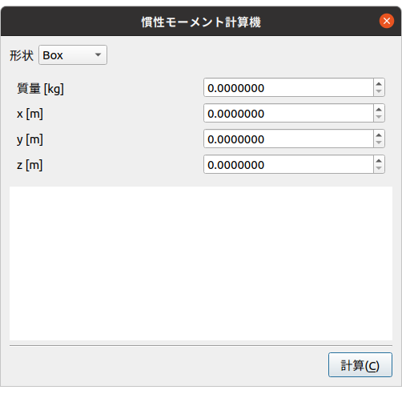

慣性モーメントの計算¶
ここでは、慣性モーメント計算機の使い方を説明します。 この機能は、Box・Cyliner・Sphere・Coneの4つのプリミティブ形状の慣性モーメントを簡易に計算するものです。
慣性モーメント計算機の表示¶
以下の手順で慣性モーメント計算機を表示します。
「メニュー」-「ツール」から「慣性モーメント計算機」を選択する。
下図は、慣性モーメント計算機のダイアログです。
計算の実行¶
以下の手順で慣性モーメントを計算します。
「形状」から慣性モーメントを計算したい形状を選択する。
各パラメータを入力し、「計算」を押す。
※パラメータ「回転軸」は、CylinderまたはCone形状の中心軸の向きを表します。